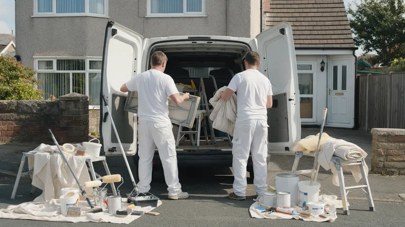
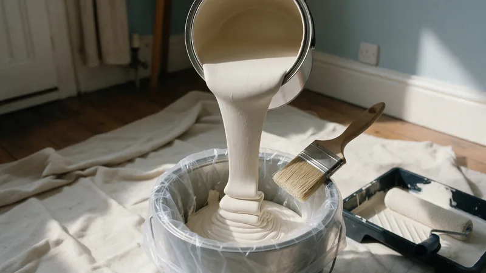

About
A firm that does not exist.
Coatsby Decorators is invented. There is no van, no pasting table and nobody to ring. It is a demo built by Clockwork AI to show a real decorating firm what a site looks like when everything on it is written properly. The story below is made up too, and it is here because a real site needs one and this is what a good one reads like.
The made up version
Three of us and a van that always smells faintly of white spirit. Two on the brushes, one measuring, quoting and explaining for the hundredth time why the hall cannot be finished on Saturday if the woodwork is going in oil based. The name came from the two things the job actually is, coats and brushes, and from a street somebody grew up on, and it stuck before anybody thought harder about it.
The work is ordinary and we are not pretending otherwise. Living rooms before Christmas. Halls, stairs and landings that have been waiting four years because of the height. Fronts of houses that went chalky a season ago. Kitchens where the carcasses are perfectly sound and only the doors look dated. Flats between tenants, which is the bread and butter nobody photographs.
What we would want a customer to notice
Not the colour. Anybody can put colour on a wall. What we would want noticed is the caulk line where there used to be a black gap, the switch plates that came off instead of being cut round, the lack of a brushed frame round each wall, and the fact that the room got put back at the end of each day rather than at the end of the week.
And what we would say no to
Painting over damp. Painting bare new plaster without a mist coat. Promising a factory finish on a door with forty years of brush marks in it. Promising an outside wall in February. Every one of those is easy money on the day and a phone call you do not want in two years.

Generated photoGenerated for this demo. The people in it are not real and nobody in any picture on this site is identifiable.

Generated photoOut of the tin and into a lined kettle, because nobody works out of a four litre tin on a ladder.
The three of us
Invented people.
Dan
The one who holds a light along a wall before saying a price, and who will tell you the ceiling needs doing too even when you only asked about the walls. Does the cutting in, because he is quicker at it and because he cannot leave anybody else's alone.
Marnie
Paper and woodwork. Plumbs a line before the first length goes anywhere near a wall, numbers every kitchen door on the inside edge, and is the reason nothing on a finished job has a painted screw head in it.
Tez
Measuring, quoting and the phone. Writes the quote room by room with what is not included on its own line, and is the one who rings to move an exterior week when the forecast turns rather than pushing on and hoping.
Invented for this demo. No real people, no photographs of anybody and no claims about anybody's experience.
About this demo
What you are actually looking at.
Everything is fictional
The firm, the people, the jobs, the reviews and the pictures. The firm's phone number is from the range Ofcom keeps for television and film, so it rings nobody, and the email ends in .example, which cannot receive anything.
Nothing here is sent or saved
The quote form checks your answers and previews your photographs in your own browser, then shows a thank you. The chat box is a script with no connection to anything. Nothing leaves your device and nothing is stored.
No prices and no promises
There are no prices anywhere on this site, no guarantees, no schemes, no qualifications and no response times, on purpose. Everything factual on it is general trade knowledge rather than advice on your property.
Seen enough of the demo?
Have a look at the work, the advice or the quote form. Or ring Clockwork on the number in the bar at the top.